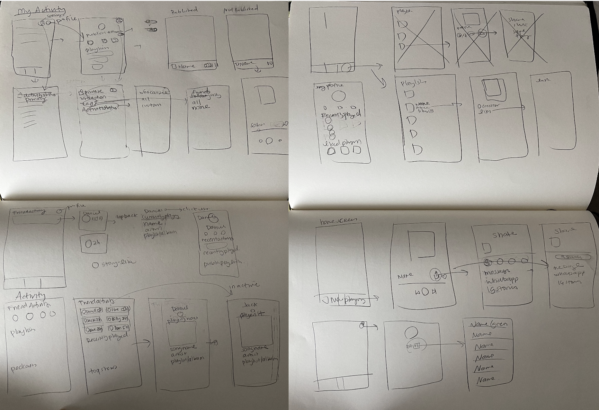
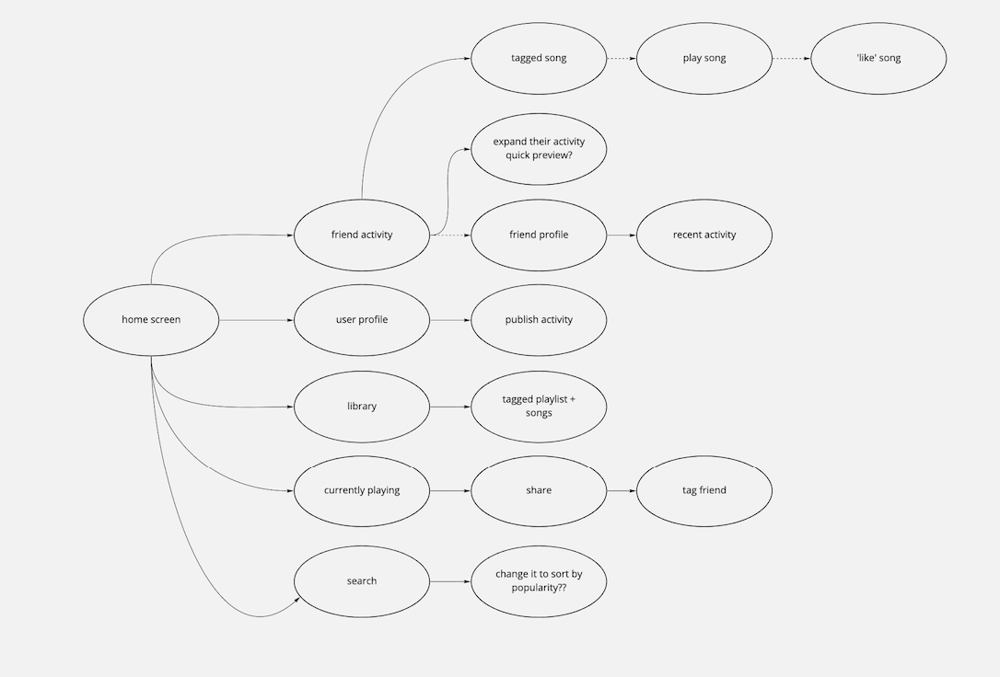
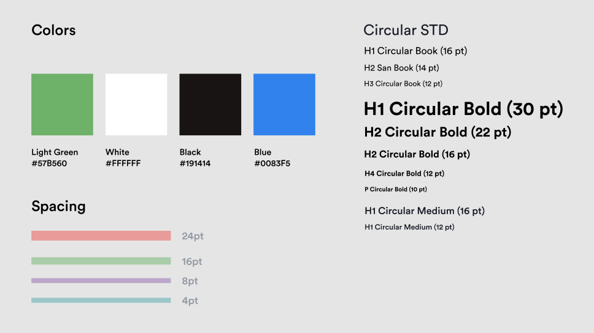

Team: Haemin Hwang (me), Janice Khang
My Role: Research, Qualitative Data Analysis, Wireframing Explorations, Visual Design, Prototyping, Usability Testing
Overview
Like many Spotify users, I like to engage with my friends and family by sharing songs and curated playlists and vice versa.
Music has become one of the ways a person can express her/himself. Lovers often share and make playlists for each other and friends predict what their friends are up to based on the music that they’re listening to. It’s prominent that the music industry is heavily influenced by social engagement, so is the streaming platform.
Click 🧭 to jump to solution
The Problem
Inefficient Navigation
At the beginning of this study, my hypothesis was: People have a hard time engaging with friends because Spotify has no in-app feature that allows for sharing.
User Research
I surveyed 42 users of Spotify to gather Behavioral and Attitudinal dimensions when using the app. My goal was to learn how different users interact with the mobile app and how they discover new content.
Key Insights:
1. Social activity within the mobile app is nonexistent, making it harder to share songs across profiles.
2. Sharing songs with others caused users to leave the app and was a deterrent of engagement and activity.
3. It is impossible for users to feel rewarded with sharing songs within the app because there is no possibility for social interaction within the app.
4. Many users view their friends' activity on Spotify desktop to interact with them and discover new music.
People Want to Engage With Others
In the beginning, I believed that users found it difficult to share content. Users found it awkward to share songs by having to leave the app. After user research, I found that it was a bigger problem: users wanted more transparency and control over their activity within the app.
Hypothesis: People want to have meaningful engagement with others on Spotify mobile app, but they can't because there is no existing space where users can both discover new content and be incentivized to interact with others.
Initial Brainstorm
Using Miro to connect safely and virtually, Janice and I brainstormed potential features to find possible solutions.
After our brainstorming session, we came up with three potential opportunities to explore:
1. Transparent Content: How might we be able to control privacy and activity within the app?
2. Increase Engagement: How might we share with friends who are not physically together?
3. Decrease Distraction: How might we be able to increase interactions without having to leave the app?
How Might We Help Spotify Improve Social Engagement?
- HMW be able to minimize the amount of actions taken to complete a task?
- HMW be able to find features discoverable within the app?
We decided that the best solution was to incorporate Spotify's social feature on desktop to mobile and allow users to share songs within the app from one user to another. In doing so, we would redesign the layout of the home screen and profiles with a focus on curated content and transparency. We made these decisions based on current user needs that were not being met. In addition, having users be able to view Friend Activity within the app will increase social interactions.
Inspiration
During market research, I audited other apps that address our problem. The apps I turned to were Discord, Facebook, and Instagram. Although Spotify is not a social app, I wanted to take inspiration from these social apps and create a unique social experience for Spotify users.
Activity across apps are very similar with their interactions. Facebook allows sharing of posts and articles via messenger or directly tag friends underneath posts without having users leave the app. Discord publishes the activity status of active and idle users with a quick swipe to peek into activity.
Wireframing User Flow and Explorations
At first, we created low-fidelity wireframes that explored many different explorations of our feature.


Using what I learned from my research and brainstorm, Janice and I sketched out different user flows of an improved home screen and social engagement.
Determining UI Elements for Engagement and Transparency
Taking our analysis from market research, we decided which elements were needed in order to promote social engagement and control privacy of content.
Exploring Home
We explored many different interface designs for the Home tab to test how certain features should be displayed. First, we explored several ways friend activity and user profile could be more accessible than how it is implemented right now. We chose against Option 2 because the circles seemed too close to stories, which are used in many different applications. We chose against Option 1 because it limits how many friends can be shown from the home screen. In addition, the Friend Activity takes up too much space in the home screen, and may deter users from engaging in music than socializing. Option 3 was eliminated because we believed there was too much text and we would rather create user intuition through visuals. We chose Option 5 because the profile and friend icon are present without intervening in the content of the home screen. In addition, we included a notification icon to show recent shared content.
Friend Activity
After deciding on the design and placement for these features, We explored different entry points for Friend Activity. We decided against Option 1 because we believed there would be too much traffic if we included side navigation for Friend Activity. We decided on Option 2 because it was the least disruptive and established an importance for social interaction.
We also had to decide how to navigate Friend Activity when trying to view a certain person's activity. We chose against Option 1 because it was too far from Spotify's current UI content. We chose Option 3 because it seemed easiest to explore a friend's activity by viewing their profile. Option 2 was not chosen because we believed there were too many steps to navigate to the content the user would want to see.
Transparency and Control
Along with having Friend Activity be visible through a friend's profile, we included a feature for users to be able to share their activity as well as see how they are viewed by others.
When a user shares their activity, a section for "Currently Playing" will appear. In addition, there will be a green volume icon present in the streaming bar at the bottom.
Sharing
One of the key pain points from my user research was that users could not share songs without having to leave the app.
Taking this information, I explored different sharing designs for better usability. Based on user testing, I chose Option 1 because users had better control over content they wished to send. Option 2 did not have an "undo" feature that would correct a mistap. In addition, the icons used to share a song were confusing and too similar to an icon for sharing a collaborative playlist.
Streamlined Content
Another feature we wanted to implement for social engagement was a generated playlist for all content shared between users. We believed it would be beneficial to display individual interactions underneath a friend's profile for easy access.
In addition, we explored different ways to have all content in one screen. We chose against Option 2 because the wording and description were confusing. We chose against Option 3 because it did not seem necessary to add another tab to view friend playlists. We chose Option 1 because we believed this option streamlined navigation for the user.
Final Interactions
After testing and exploring different features, here are the five interactions we came up with.
Transparent Activity Status
Users are now able to see how they are viewed by others when they share their listening activity on Spotify. Users can see the status of their activity in the streaming bar at the bottom by a green volume icon or "Activity Hidden."
Sharing Songs
Users can now instantly share songs within the app from user to user. They also have the ability to undo their actions before any sent content is finalized. This allows users to stay engaged within the app.
Notifications
Users receive notifications within the app by seeing a blue circle. Content notifications are stored inside Friend Activity screen and appears above all listening activity. Notification disappears when the user leaves the Friend Activity screen.
Customized Playlists
Users can view their sharing history with a friend by viewing an auto-generated playlist that includes all songs sent and received between two users.
Stored Content
Prototype
Click here to view a prototype we made in Figma.
Visual Design
Here is the UI Kit I designed that follows Spotify's style guide.

Reflection
This was the first time I worked collaboratively and virtually, and I learned to adapt to different ways of executing certain processes such as brainstorming and prototyping. I particularly enjoyed spearheading the visual design process as I could practice and refine my skills in visual design. Information and visual hierarchy are important parts of my fine arts process as I am able to create a narrative between form and content. Being able to take my visual arts skills and apply them to UI/UX design allowed us to create a final solution that adhered to Spotify's style guide as well as show our creative design skills.